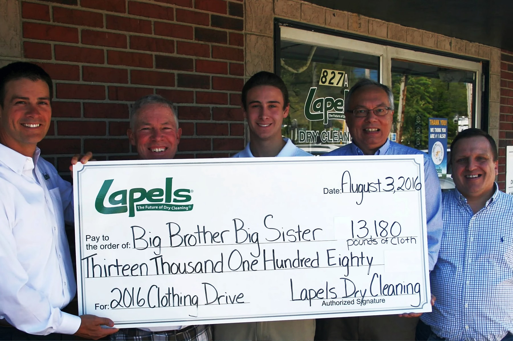
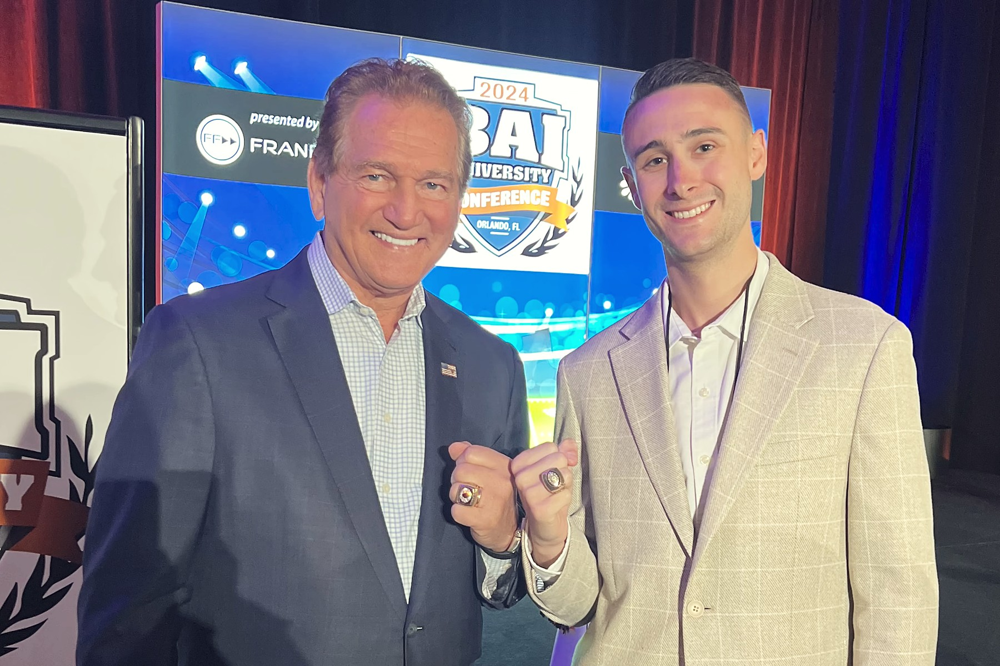

The story
Second generation. Lived every angle of franchising.
No sales scripts, just real experience. I believe happiness rests on three pillars: financial freedom, lifestyle freedom, and a lasting legacy, and franchise ownership is the best path I know to all three. There’s a running joke in franchising, family or fall in, because once you’re in, you never leave. I help people fall in with clarity and confidence, so every hour of work goes toward building something for yourself, not someone else, and your family can follow behind you to carry that legacy into the next generation.
I’ve lived every side of it, the good deals and the bad ones, to help you manage the realities of ownership with clarity and confidence, without the costly mistakes.
The independent grind
My family started as independent restaurant owners. No system, no playbook, no brand behind us. Just thirty jobs at once, with every hour spent running the business instead of growing it. Over the years, I watched families close to me start independent businesses and stay stuck working in the business instead of on it. I’ve worked for independent owners and started my own independent business too. Every one of us was juggling everything while trying to build the systems a great franchise has already spent years and serious money building, so you can step right into them.
The turn
We were skeptical of franchising for years. We spoke with several brands, and most confirmed what we believed: not enough value for what you pay. There are thousands of franchises out there, and most never reach 100 units because they can’t support their owners. But the best ones are a different story. You run your own business with national resources and a team of experts behind you, and the systems give you your freedom back. We became franchisees, and more than ten years later, we’re still multi-unit owners, running four locations in Massachusetts from Florida.
The franchisor side
Then our family got the chance to lead the brand itself. It was stuck at ten to fifteen locations. We invested in the franchise systems and scaled it past 2,400 locations, and it’s still growing today, with more than 70% of its owners running multiple units. I saw firsthand what it takes to build a system franchisees can succeed in.

The lesson that stuck
We also owned a food franchise that taught us the hard way what a weak franchisor costs you. A strong franchisor has to be an expert in two things at once: their industry and franchising itself. Over the years, that became the heart of the vetting criteria I use today: does a brand have what it takes to reach 100 units and truly support its owners in their goals?
Growing up in it
I held nearly every job in the family business, and in high school I managed a location for another franchisee in the system. That’s when I saw it: done right, ownership means building something that runs without you there every day. It isn’t buying yourself a job.
Corporate finance
I graduated early and took the “safe path” into finance and asset management recruiting, working with investors in one of the highest paying industries there is. I learned how to evaluate businesses and the people who run them. I also saw that no matter how big the paycheck or benefits, they had no real control over their future. There is no safe path. Business ownership puts your future in your hands instead of someone else’s.
Conquer the Mind
In 2020, I realized I needed to put the power in my own hands by starting a business. I launched Conquer the Mind, a financial literacy brand built on one idea: take control of your mindset and you take control of your life. My goal was always to open franchises, and that takes capital. So I kept my corporate career and spent every waking hour building a marketing agency, using my skill set to help franchisors market themselves better while building my personal brand.
The bet
I went to the International Franchise Expo to buy a franchise and fell in love with franchise consulting instead. Coaching lets me help others reach financial freedom, lifestyle freedom, and a lasting legacy, by sharing my experience and helping people take back control of their lives. So I took a six-figure loan, walked away from a remote six-figure salary, and started franchise coaching under JD Strategic. No guarantees, much less money, no safety net, and twice the hours. I bet on nothing but my own work ethic.

A franchisee myself
I’m opening my own franchise in Miami, the first of many. It was always the goal, but the timeline shifted when I found franchise coaching, as it felt like a calling. Franchising gave my family the freedom to build the life we wanted. I get to build that for myself as a franchisee and help others do the same.
Today
Today I’m a Certified Franchise Consultant, the featured consultant for the leading dry cleaning and laundromat brand, and host of the Conquer the Mind podcast. With my own franchise to build, I value my time and choose to spend it helping others. That’s why I’m selective and work with about ten people a month, so every one of them gets my full attention.